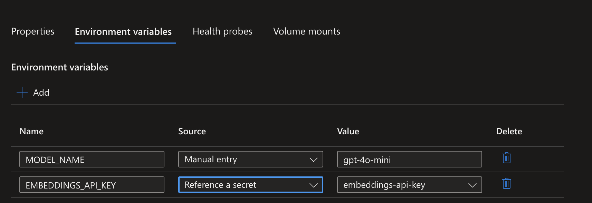
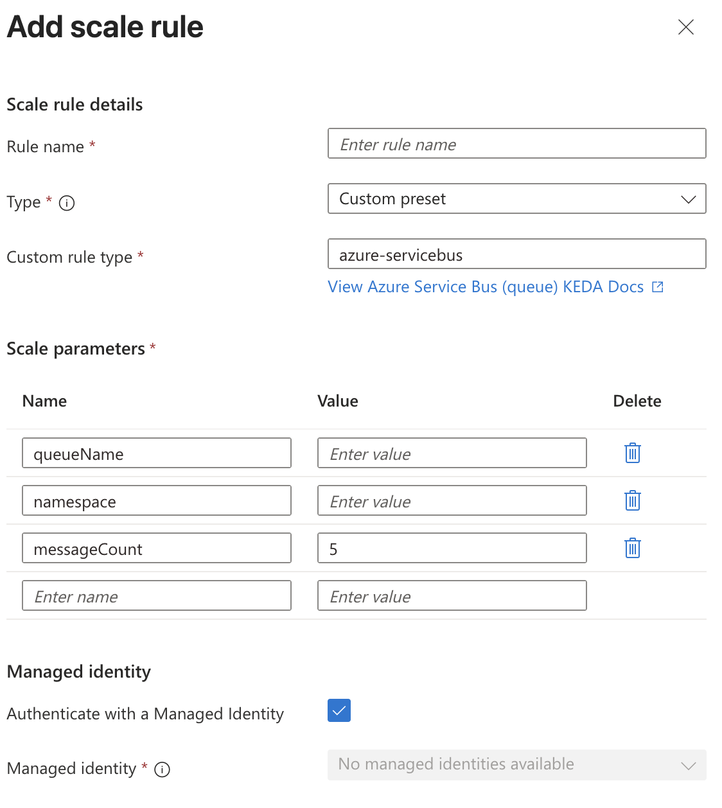

Azure Container Apps (ACA)
Container App Environment
- Base infrastructure for Container Apps. It is a logical isolation boundary.
- Can be shared by multiple container apps. Creating container apps requires at least one environment.
- Container apps in the same environment share:
- virtual network
- networking rules
- monitoring
- log rules
- Cannot change environment configuration after creation.
- If lazy can use
az containerapp create up. I.e.az containerapp up \ --name order-api \ --resource-group rg-ecommerce \ --image myregistry.azurecr.io/order-api:v1 \ --cpu 0.5 \ --memory 1.0Gi \ --min-replicas 2 \ --max-replicas 20 \ --ingress external \ --target-port 8080 \ --registry-server myregistry.azurecr.io - You can create a container app using a YAML file
az containerapp create --yaml <yaml_file_name>.
Revisions
- Use Digest instead of tag for container images if you want to ensure specific version. I.e.
myregistry.azurecr.io/myapp@sha256:<digest>. Updating is:az containerapp update \ --name <app-name> \ --resource-group <resource-group> \ --image <registry>/<repo>@sha256:<digest> - You can deactivate a revision
az containerapp revision deactivate. This option is useful when you want to rollback to the previous version. - Feature of auto pull from registry
--enable-cd true. Take note usinglatestimage tag does not pull latest and requires restart. - Check revisions
az containerapp revision list - Delete revision
az containerapp revision delete --name <app-name> --resource-group <resource-group> --revision <revision-name> - Update default replica
az containerapp update --name <app-name> --resource-group <resource-group> --revision <revision-name> - Secret change does not bump revision. You need to update the image to bump revision and also issue
az containerapp revision restart --name <app-name> --resource-group <resource-group>. However, you can useaz containerapp update --name <app-name> --resource-group <resource-group> --set template.containers[0].env[0].secretRef=<new-secret-ref>to update the secret reference, and it will bump the revision. - Keyvault Secret also does not bump revision, but there is a caveat that there is cache and might not be updated. The best force is to update revision!
Image pull behavior
- Understanding when App Service pulls images helps you plan for deployment scenarios and troubleshoot issues.
- Initial deployment: App Service pulls all image layers when you first deploy the container or change the image reference.
- App restart: On restart, App Service checks for changes and pulls only modified layers. If the image is unchanged, the cached layers are used.
- Scale out: When App Service adds new instances, each instance pulls the image. New instances might need to pull the full image if layers aren't cached on the underlying infrastructure.
- Pricing tier changes: Moving to a different pricing tier might allocate new infrastructure, which pulls the image fresh and can affect startup time.
Ingress
- external - internet/outbound traffic enabled.
- internal - no out bound traffic to external.
- Deploy both containers to the same ACA Environment if there is a frontend and backend; with frontend communicating with backend without using internet, i.e. it is faster and more secure. Enable External Ingress on the Frontend app, and enable Internal Ingress on the Backend app.
- Code:
az containerapp update \
--name myapp \
--resource-group myresourcegroup \
--ingress external \
#--ingress internal \ then use properties.configuration.ingress.fqdn in frontend config to connect to backend.
--target-port 8080 \
--registry-server myregistry.azurecr.io
Registry authentication
- Similar to Azure App Service, ACA uses managed identity or service principal for registry authentication.
- Note any application that uses UAMI (not system managed identity), a CLIENT_ID needs to be provided via environment variable. You MUST set the AZURE_CLIENT_ID environment variable in your Container App. Why? Because a single Container App can have multiple User-Assigned Identities attached to it. When your code calls new DefaultAzureCredential(), it uses that variable to know which specific identity it should request an Entra ID token for.
Revisions
- Change in condition of:
- container image
- environment variables
- secrets
- resource allocation
- scale rules
- init containers
- Revision can be deactivated.
- You can set label to each revision.
az containerapp revision label add \
--name <CONTAINER_APP_NAME> \
--resource-group <RESOURCE_GROUP_NAME> \
--revision <REVISION_NAME> \
--label <LABEL_NAME>
Environment Variables
- Two types
- manual
- secretref - reference to a secret
- Secrets are encrypted and stored separately from the environment, hence secretref:X.
- Can be defined in YAML
az containerapp update/create --yaml - Env variables can be deleted.
{
"properties": {
"configuration": {
"secrets": [
{
"name": "db-password-ref",
"keyVaultUrl": "https://<VAULT_NAME>.vault.azure.net/secrets/<SECRET_NAME>",
"identity": "<MANAGED_IDENTITY_RESOURCE_ID_OR_system>"
}
]
},
"template": {
"containers": [
{
"name": "my-app",
"env": [
{
"name": "DATABASE_PASSWORD",
"secretRef": "db-password-ref"
}
]
}
]
}
}
}

Health Probes
- Liveness Probe - determines if the container is running.
- Readiness Probe - determines if the container is ready to receive traffic.
- Default is TCP, means it will check the connection to the specified port, not via httpGET.
Container
- Rule: Always have Memory request 2x of CPU request.
az containerapp create \ --name order-api \ --resource-group rg-ecommerce \ --environment my-environment \ --image myregistry.azurecr.io/order-api:v1 \ --cpu 0.5 \ --memory 1.0Gi \ --min-replicas 2 \ --max-replicas 20 - There is a Dedicated vs Pay-as-you-go pricing model.
- Dedicated - you reserve the capacity, hence you pay for the capacity even if not in use. You can choose:
- General Purpose -
- High Performance -
Scale
Scaling Rules
- Works via KEDA - Kubernetes Event-driven Autoscaling.
- Rules:
- HTTP Scaling - concurrent requests per container. [IMPORTANT] Jobs cannot be triggered via HTTP, use cron or events.
- CPU/Memory Scaling - based on cpu/memory utilization percentage
- KEDA Scaling - External Scaling
- Azure Service Bus Scaling - topic name + queue name + queue length
- Azure Queue Scaling - queue name + queue length
- Cron job Scaling - based on cron expression
- Kafka Scaling - topic name + partition count
- Redis Scaling - Redis length
- RabbitMQ Scaling - queue length
- Redis Stream Scaling - Redis length
- Can use Managed identity.
- Properties to be aware of:
- --scale-rule-auth "connection=my-queue-connection-string-secret" = method to use connection string to queue or event bus
- --scale-rule-identity = preferred way
az containerapp job create \ --name "my-event-job" \ --resource-group "my-rg" \ --environment "my-environment" \ --image "myregistry.azurecr.io/processor:v1" \ --trigger-type "Event" \ --replica-timeout 600 \ --polling-interval 30 \ --min-executions 0 \ --max-executions 10 \ --scale-rule-name "queue-trigger" \ --scale-rule-type "azure-queue" \ --scale-rule-metadata "accountName=mystorageaccount" "queueName=tasks" "queueLength=1" \ --scale-rule-auth "connection=storage-connection-secret" min-replicasandmax-replicasdefault to 1.- Can use yaml.
- To see replicas use
az containerapp replica list -n N -g G. - To see specific replica logs
az containerapp logs show \ --name <APP_NAME> \ --resource-group <RESOURCE_GROUP> \ --revision <REVISION_NAME> \ --replica <REPLICA_NAME> \ --container <CONTAINER_NAME> \ --type console \ --tail 50 \ --follow true - link
- You can create jobs with
az containerapp job create \ --name "daily-five-pm-job" \ --resource-group "MyResourceGroup" \ --environment "MyContainerAppEnv" \ --trigger-type "Cron" \ --cron-expression "0 17 * * *" \ --replica-timeout 1800 \ --replica-retry-limit 1 \ --image "myregistry.azurecr.io/my-task-image:latest" \ --cpu "0.5" --memory "1.0Gi"
Traffic Management
- To have traffic-based scaling, enable
--revision-mode multiple. Example--revision-weight order-api--v1=80 order-api--v2=20. - Can use latest,
--revision-weights <OLD_REVISION_NAME>=80 latest=20or--latest-revision true --weight 100. - Labelling with revision-weight is only for traffic management.
- Labelling with
az containerapp revision label add --name <APP_NAME> --resource-group <RESOURCE_GROUP> --revision <REVISION_NAME> --label <LABEL_NAME>. - Remember you cannot scale specific revision! You need redeployment, hence only the latest version is scaled; and you need to update the traffic control.
